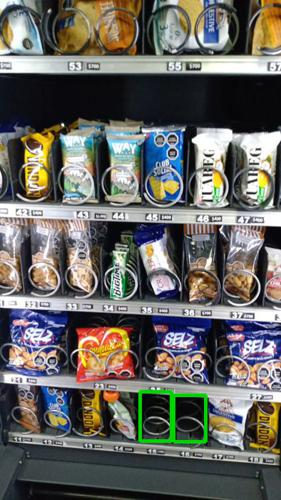
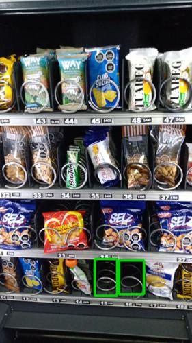

Antes de AbastecerSe detectaron 2 espirales vacios.

id 368.331 |
Luego de AbastecerSe detectaron 2 espirales vacios.

id 368.332 |
|
| Fecha |
Reporte |
Vacios ANT |
% Abast |
% Quiebre |
Sum QTY |
Rotación Diaria |
Abast hace (días) |
| 19-07-2021 |
Viendo |
2 |
8.0 |
5.0 |
40 |
8 |
5 |
| 14-07-2021 |
Ver |
0 |
24.0 |
0 |
120 |
60 |
2 |
| 12-07-2021 |
Ver |
0 |
22.4 |
0 |
112 |
37 |
3 |
| 09-07-2021 |
Ver |
4 |
20.2 |
10.0 |
101 |
50 |
2 |
| 07-07-2021 |
Ver |
8 |
11.2 |
20.0 |
56 |
28 |
2 |
| 05-07-2021 |
Ver |
1 |
34.2 |
2.5 |
171 |
34 |
5 |
|
|
|
Se abasteció la máquina con:
Total de 40 unidades de 4 productos.
| Qty. |
Producto |
SubFamilia |
Familia |
| 10 |
Papas Fritas Tika Chiloe |
Salados |
Snack |
| 10 |
Papas Nativas Andina Tika |
Salados |
Snack |
| 10 |
Papas Fritas Lays Evercri |
Salados |
Snack |
| 10 |
Papas Mediterraneas Orega |
Snack |
Snack |
| Productos más abastecidos en últimas 6 semanas:
| Nro. Abast |
Qty/Abast |
Producto |
Abast hace (días) |
Fecha |
| 9 |
9 |
De Todito I Evercrisp 50G |
5 |
14-07-2021 |
| 8 |
8 |
Papas Mediterraneas Orega |
0 |
19-07-2021 |
| 7 |
9 |
Galletas Club Social |
5 |
14-07-2021 |
| 7 |
8 |
Papas Mediterraneas Jamon |
5 |
14-07-2021 |
| 6 |
19 |
Super Ocho Clasico 24 Gr |
14 |
05-07-2021 |
| Productos menos abastecidos en últimas 6 semanas:
| Nro. Abast |
Qty/Abast |
Producto |
Abast hace (días) |
Fecha |
| 1 |
6 |
Nordic Lata 350 Cc |
35 |
14-06-2021 |
| 1 |
6 |
Andifrut Durazno Tetra 20 |
31 |
18-06-2021 |
| 1 |
8 |
Barra De Proteina Chocola |
31 |
18-06-2021 |
| 1 |
10 |
Papas Fritas Tika Chiloe |
0 |
19-07-2021 |
| 1 |
10 |
Galleton Naranja Almendra |
40 |
09-06-2021 |
|
|